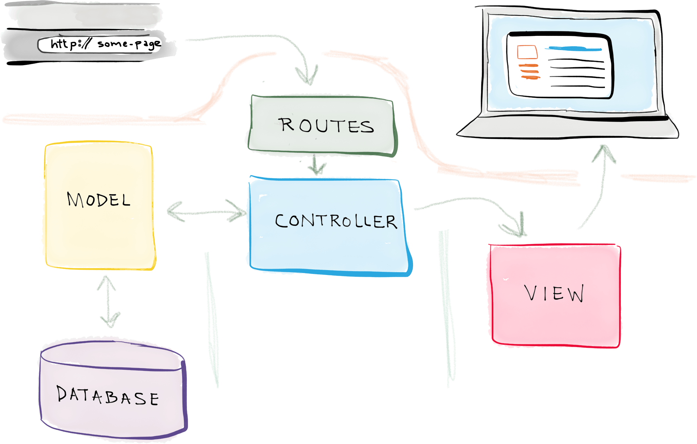

Laravel
Vježba 1
Prva Laravel APP
Model Viev Controller arhitektura
Stvaranje novog Laravel projekta (v5.1)
composer create-project --prefer-dist laravel/laravel auti 5.1
Stvaranje modela i migracije (database), direktoruj app
cd auti
php artisan make:model Auto --migration
Modeli se nalaze u app direktoriju pa će prethodna naredba stvoriti model app/Auto.php
namespace App;
use Illuminate\Database\Eloquent\Model;
class Auto extends Model
{
//
}